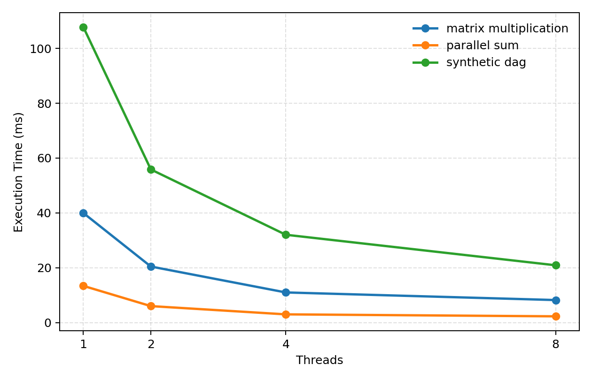
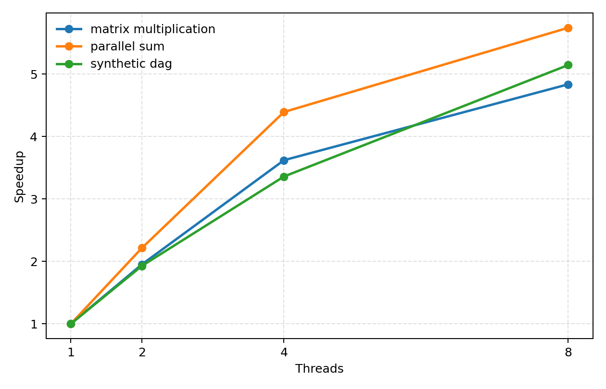
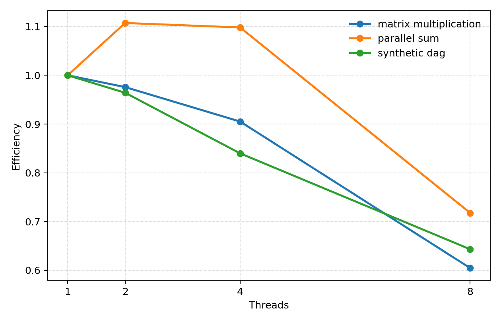

HPC Research Project
Task-Based Parallel Runtime with Work-Stealing Scheduler
A compact C++17 shared-memory runtime for dependency-aware execution, decentralized load balancing, and reproducible benchmark analysis.
Measured Highlights
Overview
What the project demonstrates
The runtime executes tasks as a directed acyclic graph on a fixed-size thread pool. Tasks become runnable only when their predecessor dependencies complete, and idle workers dynamically steal work from busy workers to maintain utilization under irregular task availability.
Architecture
System design at a glance
Task Graph
Each task stores a callable body, successor list, and atomic dependency counter so readiness can be resolved incrementally.
Worker Queues
Each worker owns a deque and executes local work in LIFO order to preserve locality and reduce scheduling friction.
Work Stealing
Idle workers steal from the front of peer queues, improving balance when the DAG exposes uneven parallelism.
Evaluation Pipeline
Benchmark runs emit CSV data and plotting scripts generate figures reused by both the paper workflow and this site.
Execution Flow
How scheduling works
Create Tasks
Applications register task bodies and dependency edges to form a DAG before execution begins.
Enqueue Ready Work
Tasks with zero unresolved dependencies are pushed into worker-owned ready queues.
Execute and Unlock
Completed tasks decrement successor counters, and any counter reaching zero releases a new runnable task.
Steal When Idle
Workers with empty local queues probe peers and steal work to keep compute resources busy.
Results
Benchmark outcomes
The runtime was evaluated on parallel sum, blocked matrix multiplication, and a synthetic dependency-rich DAG across 1, 2, 4, and 8 worker threads.
Parallel Sum
Strongest observed scaling, reaching 5.74x speedup as the reduction tree exposes wide initial parallelism.
Matrix Multiply
Compute-dense tasks amortize scheduler overhead well, though efficiency declines at higher thread counts.
Synthetic DAG
Irregular dependency structure still scales meaningfully, reaching 5.14x speedup at 8 threads.



Key Insight
Why the results matter
The project shows that a relatively small runtime can still capture the essential behavior of task-based shared-memory execution: tasks unlock incrementally through dependency resolution, work stealing smooths imbalance, and scalability depends on both the exposed parallelism of the DAG and the cost of synchronization as thread count rises.